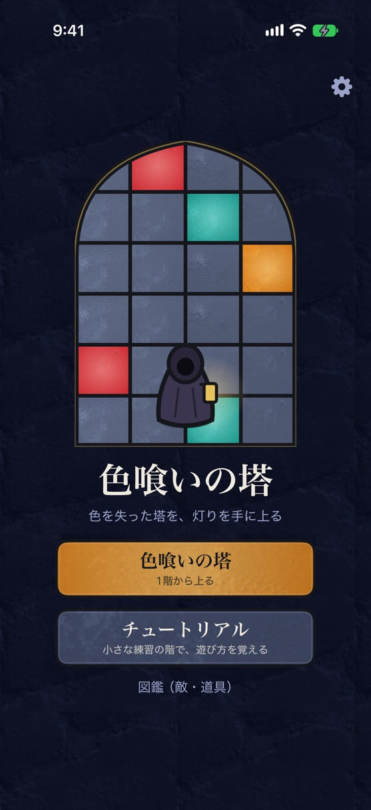
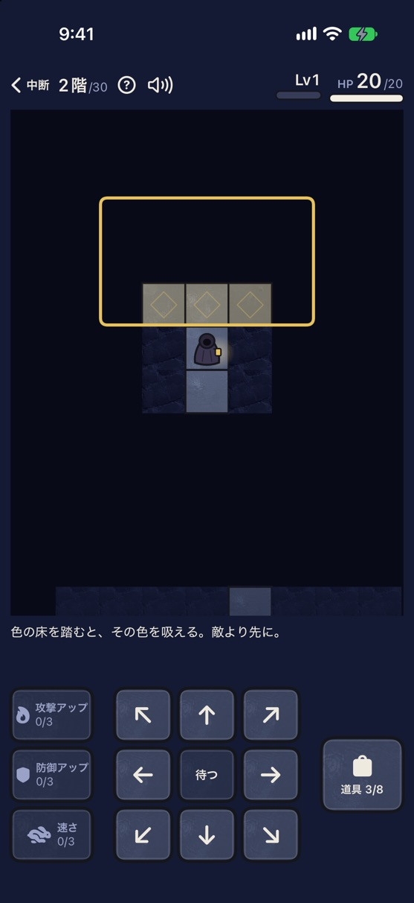
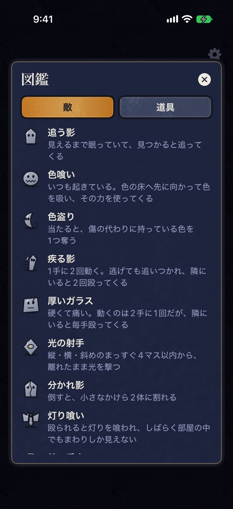

FEATURES
できること
色を吸って使う
赤は次の攻撃+4、青は次に受けるダメージ−3、黄はその手を2回動けます。どこで何を使うかが勝負です。
1手ずつ考える
あなたが1マス動くと、敵も1マス動きます。急かされずに、じっくり考えて進めます。
毎回ちがう30階
入るたびに地図が変わります。11種類の敵と7種類の石。30階のてっぺんに、塔が色を喰う理由が待っています。
はじめてでも
練習用の小さな階で、遊び方を1つずつ試せます。途中でやめても、次に開いた時に続きから遊べます。
SCREENS
画面



PRICE
値段
無料
¥0
- 30階すべてとチュートリアル
- 倒れた時の「続ける」（1回の冒険で1回。短い動画を見ると使えます）
- はじめの画面・図鑑の下と、5階ごとに階段を上った時に広告（塔の中で遊んでいる画面には出ません）
広告なし
¥980（買い切り）
- 広告が全部消える
- 「続ける」も動画なしで使える
2026年12月13日までに入れた方へ
2026年12月13日までにこのアプリを入れた方は、買わなくてもずっと広告なしです。
2026年12月13日までにこのアプリを入れた方は、買わなくてもずっと広告なしです。
FAQ
よくある質問
色はどうやって使いますか？
画面の左下にある「攻撃アップ」「防御アップ」「速さ」のボタンを押すと、次の1回にその色の力が乗ります。押した数だけ色が減ります。
石の正体が分かりません
はじめは「くすんだ石」のように見た目の名前しか分かりません。使った時・持ったまま色の床を踏んだ時・店で売った時に正体が分かり、同じ種類の石はその後ずっと名前で見えます。図鑑の「道具」で、どんな石があるかを見られます。
倒れるとどうなりますか？
吸った色も持ち物もなくして1階からやり直しです。1回の冒険で1回だけ、「続ける」でその場から続けられます。
途中の冒険は引き継げますか？
途中の冒険はiPhoneの中だけに保存しています。アプリを削除すると消えます。
「広告なし」を買ったのに広告が出ます
設定（はじめの画面の右上の歯車）→「購入を復元」を押してください。購入に使った Apple アカウントでサインインしている必要があります。
SUPPORT
サポート
不具合・ご要望・ご質問は、メールでお知らせください。
お使いのiPhoneの機種・iOSのバージョン・アプリのバージョン（アプリの設定のいちばん下のバージョン）を書いていただけると、早く調べられます。